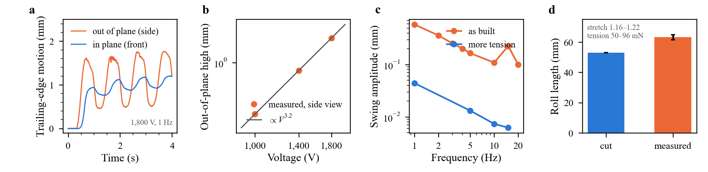
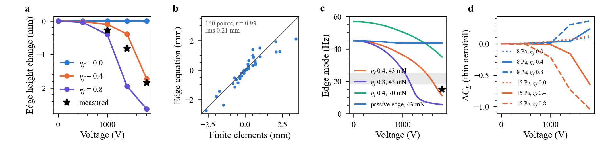
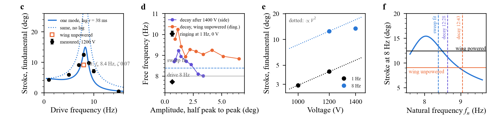
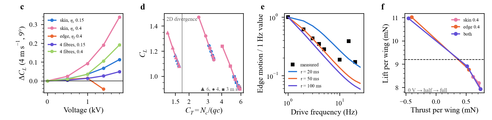
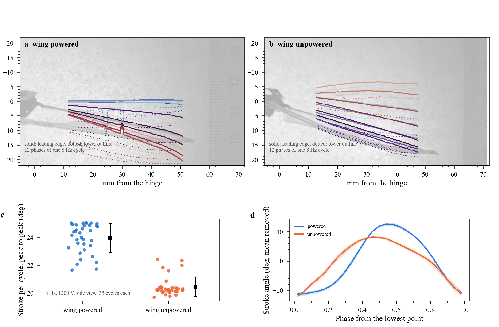

Active membrane wings / Results
Results
B-cube, a flapping robot with an all-DEA wing: the main findings in seven figures, as they would go in a paper, with conclusions and the tests that settle what is open. Data on Experiments, design on Robot, models on Wing in air.
Main findings
- The robot is built and flaps. DEA core, transmission and an all-DEA wing (active skin and rolled active trailing edge) flap at resonance: 24.3 ± 1.0° peak to peak at 8 Hz and 1200 V, tip 23 mm (Fig. 1, 4). Measured.
- The wing moves, mostly out of plane. On the bench, 1.8 mm out of plane at 1800 V and 1 Hz, against about 0.3 mm in plane; the cycle high grows about as $V^{3.2}$ (Fig. 2). Measured.
- The mechanism is a tension switch. The rolled edge loses its tension and the skin alone cannot hold it: two springs in parallel, the edge string ($8T/L^2$) and the skin ($N/c$). This explains the jump, the saturation, and why extra tension cut the motion about 13× (Fig. 3). Model fitted to one wing.
- Voltage tunes the edge mode, from about 45 Hz at 0 V to 11–27 Hz at 1.4–1.8 kV; the 15 Hz bump of the bench sweep fits a nearly slack edge (Fig. 3). Model, one measured point.
- In air, the skin matters too. Only about 15 % of the skin's Maxwell stress stays as a drop in chord tension, but the wing sits near membrane divergence ($C_T \approx$ 3.3 at 4 m/s), so the active skin alone adds $\Delta C_L$ +0.09 to +0.37 and always settles. Discrete rolled fibres on the same wing give half of it for 51 mg more. A fully slack edge has no steady state at 4 m/s and faster (Fig. 5). Model.
- The DEA force lags the voltage by 40–50 ms, found twice: the fall of the wing's bench motion from 1 to 5 Hz (50 ms) and the height of the robot's resonance peak (38 ± 13 ms). At 25 Hz, any on/off timing acts as half the voltage held: voltage is a slow trim (Fig. 4, 5).
- The robot's resonance is 8.4 Hz, not 20–25 Hz, with a damping ratio of 0.07 (Q about 7 in still air). It is not fixed: the spring softens with stroke (9 Hz near 1°, 8 Hz at 3.4°) and it moved by 5 % between sessions. At 1 Hz the stroke goes as $V^2$; at resonance 1400 V adds only 8 % (Fig. 4). Measured.
- Powering the wing changes how the robot flaps. At 8 Hz and 1200 V the stroke is 24.3 ± 1.0° with the wing powered against 20.2 ± 0.7° with only the core powered (+20 %, 35 cycles each), and the cycle changes shape: unpowered, the stroke carries 2.4× more 2nd harmonic although it is smaller, which a drift of the natural frequency cannot produce (it predicts 1.2×). Read: the unpowered membrane acts as a stiff, lopsided spring on the leading edge, and voltage slackens it. The two runs were 20 min apart, so part of the size gap may be drift (Fig. 7, Analysis).
- At the measured kinematics the flapping makes no thrust. Thrust needs $St \gtrsim 0.15$; the robot is at 0.05 at 4 m/s, so it needs 16–25 Hz. Lift comes from the forward speed (Fig. 6). Even at the design point, free flight needs about 2 J/kg per cycle from the cores, about twice what the bench gave (Fig. S2). Model.
Fig. 1. The robot

- a–c: one wing on the robot: DEA core in the body, transmission to the carbon leading edge, DEA skin, rolled DEA trailing edge tied back to the body. 200 fps, 0.152 mm/px; scale bar 10 mm.
- d–f: brightest minus darkest pixel over a run at 8 Hz (1200 V side and diagonal, 1400 V front): the swept area of the wing. The front view shows the trailing edge lagging the leading edge.
Fig. 2. The wing on the bench

- a: 1800 V, 1 Hz, sine squared from 0 V. Out of plane (side view) the edge swings between about 0.5 and 1.7 mm, with flat tops: the edge is slack for part of the cycle. In plane (front) it is smaller and lags.
- b: cycle high from the side, 0.28, 0.82, 1.84 mm. Slope 3.2 on log axes. Voltages were run in ascending order, so some may be wear-in.
- c: diagonal view, 1800 V. Falls about as $f^{-0.8}$ to 5 Hz, bump at 15 Hz, about 0.1 mm at 10 and 20 Hz. Pulling the thread further cuts it about 13× at 1 Hz.
- d: roll cut 52.94 mm (mask), measured 61.6–64.8 mm in the front view. With the P7670 fit ($C_1$ 42.8 kPa) and 60–87 µm film, 50–96 mN.
Fig. 3. Why: the edge goes slack

- a: finite elements of the built outline, flat, with its weight, roll pulled 6 mm. $\eta_f$ is the share of Maxwell stress the roll turns into lost force. The measured points sit between 0.4 and 0.8.
- b: $\Delta z = q_e/(8T/L^2 + N/c)$, with the roll's tension $T = T_0 - \eta_f n_f \varepsilon (V/H)^2 H w_a + $ (stretch from sagging). Three constants fitted on all 40 roll runs, 0–15 Pa: correlation 0.93, rms 0.21 mm.
- c: $f_e = \frac{1}{2\pi}\sqrt{(T(\pi/L)^2 + N/c)/(\mu_e + \rho t c/3)}$. Star: the bump measured at 15 Hz.
- d: $\Delta C_L = 2\int_0^\pi z'(\cos\theta-1)\,d\theta$ on the mid-span chord, uniform pressure. Dotted: passive edge, +0.1 from the skin. A rising edge washes the wing out, so at 15 Pa voltage removes lift.
Fig. 4. The robot flapping


- Top row: swept area (brightest minus darkest pixel over the run), side view, 1200 V, same scale; the unpowered view is rescaled and placed hinge on hinge.
- a: fundamental of the leading-edge angle (side view) at 1200 V, ± spread between blocks. Line: $\theta_1 = K\,[(1-r^2)^2+(2\zeta r)^2]^{-1/2}\,[1+(2\pi f\tau)^2]^{-1/2}$, $r = f/f_n$, with $\zeta$ 0.07 from the decays: $f_n$ 8.38 ± 0.20 Hz, $\tau$ 38 ± 13 ms. Dotted: the same without the lag. Square: wing unpowered.
- b: frequency between successive extremes of the free decays, against their amplitude; diamond: the ringing at the bottom of the 1 Hz cycle. The spring softens at large stroke, so each run sits on its own resonance curve, which broadens the measured peak in a.
- c: dotted lines $\propto V^2$ from the 1000 V (1 Hz) and 1200 V (8 Hz) points. At resonance, 1400 V adds only 8 %.
- d: stroke at 8 Hz from the fit in a, against $f_n$. A shift to 8.95 Hz would account for the size of the unpowered fundamental, but not for its shape (Fig. 7).
Fig. 5. Skin, edge and fibres in air

- a: finite elements of the built wing coupled to a steady vortex lattice; settled points only. The edge has no steady state beyond 1400 V at 4 m/s.
- b: $C_T = N_c/(qc)$ with the skin's mean chord tension. Voltage lowers $N_c$ and moves the wing towards divergence, where lift is most sensitive.
- c: time model (sheet and edge as strings, gravity, bench drive) with a first-order lag on the DEA force. 50 ms fits 1–5 Hz; the robot's resonance gives 38 ± 13 ms (Fig. 4a); the 15 Hz bump is the edge mode, smoothed in the model.
- d: time model in flow (unsteady vortex lattice), 25 Hz, ±20°, 4 m/s, with the lag. Dashed: half the robot weight.
Fig. 6. Flight at the measured kinematics

- a, b: time model in flow (strings for sheet and edge, unsteady vortex lattice with a shed wake), α 10°, wing at 0 V, 50 × 19 mm rectangle of the same area. Measured kinematics: 8.4 Hz, ±12.2° (half the measured peak-to-peak angle). At 4 m/s: -0.69 mN thrust per wing measured, +0.74 mN at the design point.
- c: all runs, α 6° and 10°, against $St = f A_{tip}/U$ with $A_{tip} = 2R\sin\Phi$, $R$ 50 mm. Thrust turns positive at $St \approx 0.15$. Lift (b) is set by the forward speed: 7.7 mN against 7.9 mN per wing at 4 m/s.
Fig. 7. Wing powered against unpowered

- a, b: 12 phases of one cycle at 8 Hz, 1200 V, over a faded frame, in mm from the hinge. Solid: leading edge; dotted: lower outline of the wing.
- c: peak-to-peak stroke of every cycle; square, mean ± s.d. 24.3 ± 1.0° against 20.2 ± 0.7°.
- d: mean cycle ± s.d., aligned at the lowest point. Both reach the same bottom; the powered wing waits there, then swings further. Unpowered/powered: 0.73 in the fundamental (0.68 expected from a natural-frequency drift), 2.37 in the 2nd harmonic (1.20 expected), 0.78 in the 3rd (1.16 expected).
Further analysis
The most interesting result in the robot videos is that it flaps differently when its wing is powered: 20 % more stroke, and a cycle whose shape no drift of the natural frequency can produce. The likely cause is that the active membrane, slack at voltage, stops acting as a stiff, lopsided spring on the leading edge; the same tension switch that moves the edge on the bench (Fig. 3) would then tune the robot's stroke. The camera moved and 20 minutes passed between the two runs, so part of the size gap may be drift. One session with the wing switched on and off every 10 s under a fixed camera separates the two: a wing effect follows the switching, a drift follows the clock. Details on Analysis.
Fig. S1. Designing the edge

- a: edge equation, 43 mN, 8 Pa. Only an active roll moves the edge; half active roll + nylon does almost as much.
- b: series rule $\Delta T/\Delta F = k_p/(k_a + k_p)$. Stiff rest (nylon): almost all of it. Same roll as the rest: just the active share.
- c: finite elements, inner share of the roll with electrodes. Below the dotted line: worse than proportional, because the unpowered part takes up the slack.
- d: $\Delta F = \eta_f n_f \varepsilon E^2 H w_a$ at $\eta_f$ 0.4. It depends only on total thickness at a given field. Grey: half to all of the 55 mN a flight edge needs. Green: the 45–90 µm window, capped above by mass and the stroke resonance.
Fig. S2. The robot at the design point

- a: $f_r = \frac{1}{2\pi}\sqrt{2kr^2/I}$, measured wing (1.6×10⁻⁷ kg m²) and cores (565 mg, $k$ 276 N/m from $C_1$). 20–25 Hz at a 2.2–2.8 mm lever; the built robot resonates at 8.4 Hz (Fig. 4).
- b: base-excited edge, damping 0.03 (bench) and 0.15 (flow). In the flapping band (grey) the edge follows at 0 V and stays put at 1800 V: about 15° of twist against 35°.
- c: $P = (D_i + D_p + D_b)U/\eta_p$ for 1.88 g. Lines: two cores at 25 Hz, 80 % transmission, at 0.8 (bench), 1.25 (published) and 2.1 J/kg (estimate). Grey: below stall.
- d: 20,000 draws over the unknowns. Energy per cycle decides it.
Conclusions
- An all-DEA wing works as an actuator, for a reason we can write down: the rolled edge loses its tension and the skin cannot hold it alone. That is new against the earlier wings, whose DEA strips carried almost no tension.
- It is a tension switch more than a camber dial: flat, then steep, then saturating. A design either works near the slack point on purpose (large change) or keeps the edge tense (small, proportional change). In flight it must stay above about 10 mN.
- The wing can trim the stroke. Powering it changed the robot's stroke size and shape; if the interleaved test confirms it, the active membrane is a slow amplitude trim for the whole robot, not only a camber or twist control.
- Keep the whole skin active and the rolled edge (it is also the electrode contact); drop discrete fibres at this size.
- Voltage is a trim, not a per-stroke control, until the 40–50 ms lag is explained (electrodes of about 20 MΩ, viscoelasticity, or the amplifier) and shortened.
- The robot's gap is frequency first, then energy. 8.4 Hz gives no thrust; raising it to 16–25 Hz (shorter lever, stiffer spring core, lighter root) comes before any flight test. Free flight then needs about 2 J/kg per cycle from the cores.
- For a paper: the wing mechanism (Figs. 2, 3), the robot's dynamics (Figs. 1, 4) and the effect of powering the wing (Fig. 7) are measured; the flight figures (5, 6) are models that say which tests matter. The interleaved test below makes Fig. 7 a result.
Open, and what settles it
| Open | Test | Prediction |
|---|---|---|
| How much of the 20 % is the wing | One session, one camera, wing on and off every 10 s at 8 Hz; then a 6–11 Hz sweep in both states | Stroke and 2nd harmonic switch with the wing, block by block |
| Why 8.4 Hz | Pluck with and without the wing, then with a known added mass | Separates core stiffness, transmission compliance and inertia; the model is about 7× too stiff at a 2.5 mm lever |
| Stroke limit at 1400 V | 8 Hz at 1200, 1300, 1400 V, side view | A hard stop shows as flat tops |
| Source of the lag | Electrode resistance; current or blocked force at 1–20 Hz; drive LED in the video | About 20 MΩ if it is RC; phase lag atan(2πfτ) |
| Edge efficiency $\eta_f$ | Roll DEA force drop at 1800 V | 0.4–0.8, so about 40–90 mN lost |
| Film thickness | Weigh a cut piece | 60 µm assumed; up to about 90 µm |
| Skin in air, $\eta_s$ | Skin under a known load, roll unpowered | 14–50 % more bulge at 1800 V |
| Sign of lift change | Static wind tunnel, 4 m/s, side view | Edge rises with voltage |
| Energy per cycle | Core against a load at 25 Hz | 0.8–1.25 J/kg; free flight needs about 2 |
Files
Figures as PNG, SVG and AI (PDF), each panel in fig/panels: Fig. 1, Fig. 2, Fig. 3, Fig. 4, Fig. 5, Fig. 6, Fig. 7, Fig. S1, Fig. S2. Code: results/figures_results.py (Figs. 2, 3, 5, S1, S2), results/figures_tests.py (Figs. 1, 4, 6), results/figures_video.py (Fig. 7, top of Fig. 4); robot tracking and fits in flapping/code; flight model in air/flap_dyn.py, air/measured_flight.py.